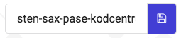
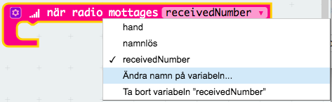

I denna uppgift ska du få koda ett Sten, sax och påse spel för två spelare. Du kommer få lära dig variabler, slumptal och hur två micro:Bits kan kommunicera med varandra.
Ett exempel på spelet hittar du här: https://makecode.microbit.org/_dzK16s3k6Vq1
Här kommer några tips för att komma igång med din micro:Bit
Hitta micro:Bit editorn
För att koda program till din micro:Bit gå till denna adress
micro:Bit editorn

Editorn är indelat i tre stora delar
Till höger finns kodytan där du bygger upp din kod
I mitten hittar du alla kodblock som behöver i olika kategorier
Till vänster hittar du en simulator där du kan testa din kod innan du kopierar över den till din micro:Bit
Det finns också två andra knappar som kan vara bra att känna till
Om du klickar på kugghjulet i övre delen av fönstret så hittar du inställningar där du bland annat kan ändra språket till svenska
En dela knapp som gör att du kan dela med dig av din kod till kompisar
Föra över program till micro:Biten
När du har skapat ett program i editorn behöver du flytta över den till micro:Biten. Det gör du genom att
Namnge projektet

Klicka på "Ladda ned"-knappen. Vilket gör att en liten fil med ändelsen hex laddas ner till din dator.
Koppla in micro:Biten till datorn med hjälp av en USB kabel
Flytta hex-filen till micro:Biten
När du startar micro:Bit studion så finns det två block redan där. Ett block som startar kod när du starta micro:Biten och ett block som hela tiden kör en loop i bakgrunden.
Sten, sax och påse spelet ska däremot starta när du skakar på micro:Biten.
Dra ett block "för skaka" från kategorin Input till kodytan


Dra in ett block "sätt namnlös på 0" från kategorin Variabler och lägg det innanför “för skaka”-blocket
Klicka på nedåtpilen bredvid namnlös och sedan på Ändra namn på variablen...

Döp variabeln till "hand"
Istället för 0 ska du sätta "hand" till ett slumptal mellan 0 och 2. Variabeln kan alltså få värdena 0 (sten), 1 (sax) eller 2 (påse).

Nu ska du få visa en sten, sax eller påse på displayen beroende på värdet på variabeln "hand". För att göra det enkelt och snyggt ska du få koda en funktion.
Klicka på kategorin Avancerat och sedan Funktioner
Klicka på Skapa en funktion och döp den till "VisaHand"

Nu ska du se definitionen av funktionen på kodytan.

Innanför detta block lägg följande kod
OM "hand" är lika med 0
Visa ikon "Diamant"

Fortsätt sedan på koden för "VisaHand" och lägg in två OM-satser till
Visa en sax OM "hand" är 1
Visa en påse OM "hand" är 2
Du får själv välja ikoner eller så kan du välja blocket "visa lysdioder" och rita din egen ikon!
Lägg in ett block "anropa funktionen VisaHand" precis efter du har slumpat fram värdet på “hand”

Testa! Du dels testa ditt spel genom simulator till vänster i fönstret. Klicka på den lilla cirkeln bredvid SHAKE.
Ladda ner spelet! Döp spelet till sten och klicka på "Ladda ner" för sedan över filen med programmet till micro:Biten med en USB-kabel. Vad händer om du skakar på den?
Nu ska koda så att två micro:Bits kan kommunicera med varandra genom radiosignaler. På det sättet blir det roligare att spela.
Här behöver du kommunicera med minst en annan person som kodar samma uppgift, så att just era micro:Bits är dem som kommunicerar!
Lägg in följande kod under blocket "vid start"
Sätt "hand" på -1
Radio ställ in grupp 1. Detta block hittar du under kategorin Radio. Välj ditt eget gruppnummer, vilket gör att bara du och din kompis kan kommunicera.

Under blocket "för alltid" lägg in ett block radio sänd nummer “hand”.

Nu är du klar med initieringen av spelet, men fortfarande händer inte så mycket mer. Det ska du få ändra på nu.
Nu kommer du hela tiden sända värdet på variabeln "hand" till den andra micro:Biten i din grupp. Samtidigt kommer den andra micro:Biten i din grupp också sända ut värdet på sin variabel “hand”. När du tar emot det värdet kan du kolla om du vann eller förlorade. Det ska du få koda nu!
Från kategorin Radio dra in ett block "när radio mottages..." till kodytan

Istället för att kalla variabeln som du tar emot "receivedNumber" så ska du kalla den “hand2”
Klicka på den lilla pilen bredvid variabeln namnet och sedan på "ändra namn på variabel"

Döp variabeln till "hand2"
I detta block ska vi kolla vem som har vunnit men vi vill bara göra det när både "hand" och “hand2” har fått ett slumptal mellan 0 och 2, det vill säga när både du och din motspelare har skakat på micro:Bitsen.
Lägg därför en OM-sats innan för blocket "när radio mottages..." som kollar villkoret att både “hand” och “hand2” är större än –1. Du hittar de flesta block under kategorin Logik.

Innanför detta kodblock lägg följande block sätt "status" på -1.
"Status" är en variabel som har koll på om du vinner eller förlorar. Om “status” har värdet -1 blev det oavgjort eller så förlorade du. Nu ska du koda så att du ändrar “status” till 1 vilket betyder vinst om du har en bättre hand än din kompis.
Skapa följande kod efter du satt "status" till -1
Sätt "status" till 1 OM “hand” är 0 (sten) OCH “hand2” är 1 (sax)

Sätt "status" till 1 OM “hand” är 1 (sax) OCH “hand2” är 2 (påse)
Sätt "status" till 1 OM “hand” är 2 (påse) OCH “hand2” är 0 (sten)
För att visa vem som har vunnit skapa följande kod direkt efter du har satt värdet på "status"
Upprepa 4 gånger
OM "status" är 1
ANNARS
Anropa funktionen "VisaHand"
Lägg in ett block som sätter "Hand" till –1

Testa! Du dels testa ditt spel genom simulatorn till vänster i fönstret. Klicka på den lilla cirkeln bredvid SHAKE och gör sedan samma sak på den andra micro:Biten
Ladda ner spelet! Döp spelet till sten2 och klicka på "Ladda ner" för sedan över filen med programmet till micro:Biten med en USB-kabel. Vad händer om du och din kompis skakar på era micro:Bits?
Grattis, nu har du skapat ett nytt spel!
Glöm inte att spara ditt projekt! Döp det gärna till uppgiftens namn så att du enkelt kan hitta den igen.
Testa ditt projekt
Visa gärna någon det som du har gjort och låt dem testa. Tryck på DELA och dela koden med en kompis.
Vad är en variabel?
Vad kan du använda ett slumptal till?
Vad kan du använda funktioner till?